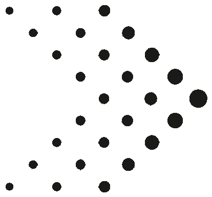
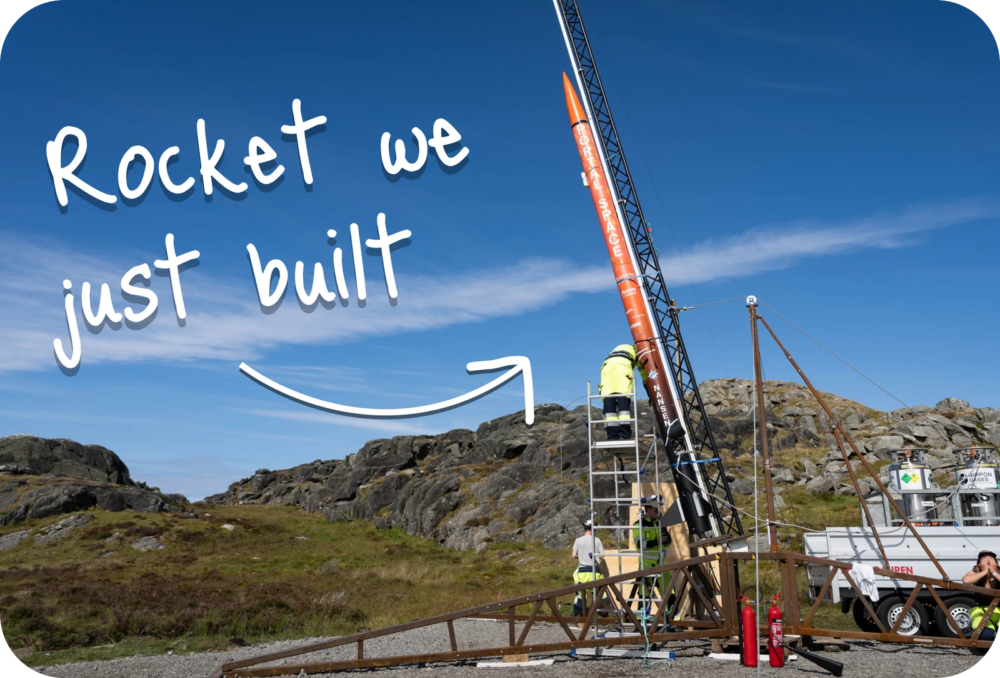
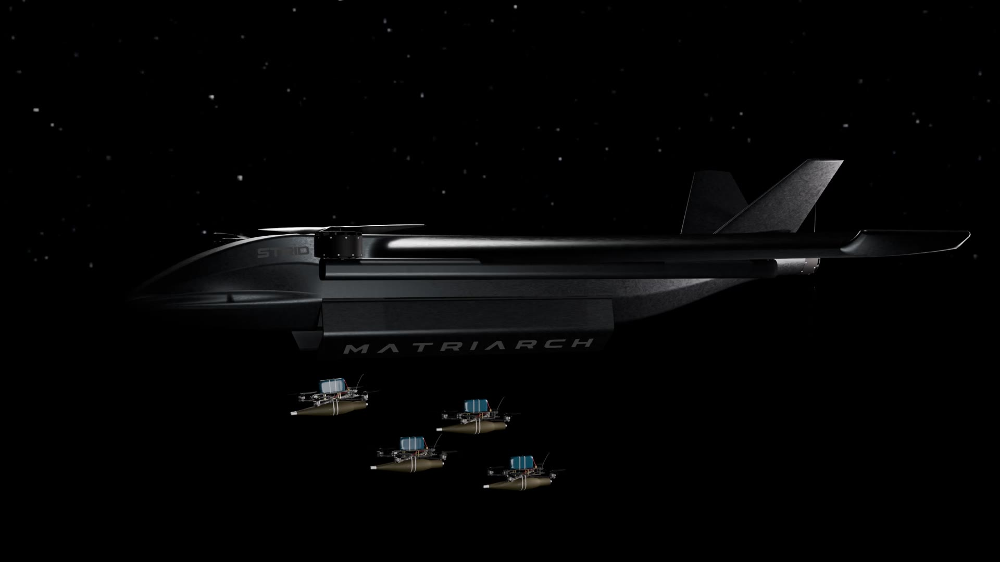

STRID
Confidential
Investor material
Angel
deck
Open deck
Watch our rocket launch

Product render

Our entry to the market
Matriarch ONE
Range
100 km operational radius
Control
Autonomous VTOL flight and deployment
Comms and EW
IP based, redundant, built to keep the link
Recovery
Flies home to be reloaded
 Open deck
Open deck
Open deck
Open deck